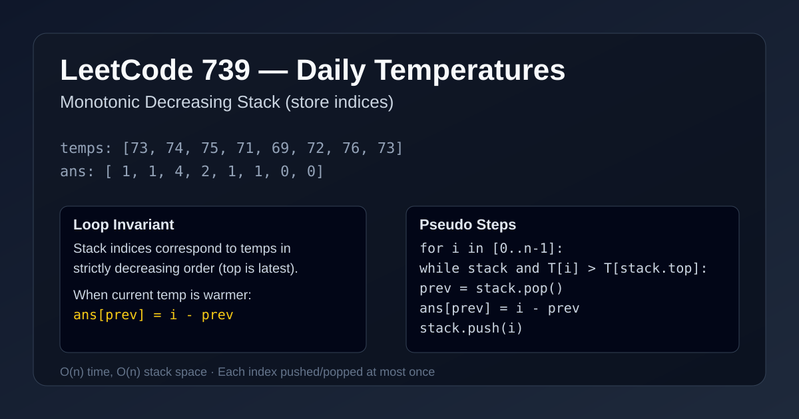

LeetCode 739: Daily Temperatures (Monotonic Stack)
LeetCode 739ArrayMonotonic StackInterviewToday we solve LeetCode 739 - Daily Temperatures.
Source: https://leetcode.com/problems/daily-temperatures/

English
Problem Summary
Given an array temperatures, return an array answer where answer[i] is the number of days to wait after day i to get a warmer temperature. If no future day is warmer, answer[i] = 0.
Key Insight
Use a monotonic decreasing stack of indices. The stack stores unresolved days whose next warmer day has not been found yet. When the current temperature is higher than the stack top's temperature, we can resolve those indices immediately.
Brute Force and Why Insufficient
For each day i, scan forward until finding the first day j with temperatures[j] > temperatures[i]. This is simple but can degrade to O(n^2) in decreasing sequences.
Optimal Algorithm (Step-by-Step)
1) Create answer initialized with zeros and an empty stack of indices.
2) Iterate i from left to right.
3) While stack is not empty and temperatures[i] > temperatures[stack.top]:
• Pop prev from stack.
• Set answer[prev] = i - prev.
4) Push current index i onto stack.
5) Remaining indices in stack have no warmer future day, so they stay 0.
Complexity Analysis
Time: O(n), because each index is pushed and popped at most once.
Space: O(n) for the stack in the worst case.
Common Pitfalls
- Storing temperatures instead of indices, then losing distance information.
- Using >= in the while condition; equal temperatures are not warmer.
- Forgetting to initialize answer with zeros.
- Accidentally pushing before popping, which breaks the invariant.
Reference Implementations (Java / Go / C++ / Python / JavaScript)
class Solution {
public int[] dailyTemperatures(int[] temperatures) {
int n = temperatures.length;
int[] answer = new int[n];
Deque<Integer> stack = new ArrayDeque<>(); // indices
for (int i = 0; i < n; i++) {
while (!stack.isEmpty() && temperatures[i] > temperatures[stack.peek()]) {
int prev = stack.pop();
answer[prev] = i - prev;
}
stack.push(i);
}
return answer;
}
}func dailyTemperatures(temperatures []int) []int {
n := len(temperatures)
answer := make([]int, n)
stack := []int{} // indices
for i := 0; i < n; i++ {
for len(stack) > 0 && temperatures[i] > temperatures[stack[len(stack)-1]] {
prev := stack[len(stack)-1]
stack = stack[:len(stack)-1]
answer[prev] = i - prev
}
stack = append(stack, i)
}
return answer
}class Solution {
public:
vector<int> dailyTemperatures(vector<int>& temperatures) {
int n = (int)temperatures.size();
vector<int> answer(n, 0);
stack<int> st; // indices
for (int i = 0; i < n; ++i) {
while (!st.empty() && temperatures[i] > temperatures[st.top()]) {
int prev = st.top();
st.pop();
answer[prev] = i - prev;
}
st.push(i);
}
return answer;
}
};from typing import List
class Solution:
def dailyTemperatures(self, temperatures: List[int]) -> List[int]:
n = len(temperatures)
answer = [0] * n
stack = [] # indices
for i, t in enumerate(temperatures):
while stack and t > temperatures[stack[-1]]:
prev = stack.pop()
answer[prev] = i - prev
stack.append(i)
return answervar dailyTemperatures = function(temperatures) {
const n = temperatures.length;
const answer = new Array(n).fill(0);
const stack = []; // indices
for (let i = 0; i < n; i++) {
while (stack.length > 0 && temperatures[i] > temperatures[stack[stack.length - 1]]) {
const prev = stack.pop();
answer[prev] = i - prev;
}
stack.push(i);
}
return answer;
};中文
题目概述
给定数组 temperatures，返回数组 answer。其中 answer[i] 表示第 i 天后还要等几天才能遇到更高温度；如果之后都不会升温，则为 0。
核心思路
维护一个单调递减栈（存下标，不存温度值）。栈里是“还没找到下一次更高温度”的天数。当前温度更高时，就可以批量结算被它“击败”的栈顶下标。
暴力解法与不足
对每个 i 向右线性扫描，找第一个更高温度位置 j，令 answer[i]=j-i。在单调下降数组中会退化为 O(n^2)，效率不够好。
最优算法（步骤）
1）初始化结果数组为全 0，准备空栈（存下标）。
2）从左到右遍历每个下标 i。
3）当栈不空且 temperatures[i] > temperatures[stack.top] 时：
• 弹出 prev。
• 计算 answer[prev] = i - prev。
4）把当前下标 i 入栈。
5）遍历结束后，栈中剩余位置没有更高温度，保持 0 即可。
复杂度分析
时间复杂度：O(n)，每个下标最多入栈一次、出栈一次。
空间复杂度：O(n)（最坏情况下栈大小接近 n）。
常见陷阱
- 栈里存温度不存下标，导致无法计算天数差。
- while 条件写成 >=，把“相等温度”误判为升温。
- 忘记结果数组初值应为 0。
- 先入栈再弹栈，破坏单调栈不变量。
多语言参考实现（Java / Go / C++ / Python / JavaScript）
class Solution {
public int[] dailyTemperatures(int[] temperatures) {
int n = temperatures.length;
int[] answer = new int[n];
Deque<Integer> stack = new ArrayDeque<>(); // indices
for (int i = 0; i < n; i++) {
while (!stack.isEmpty() && temperatures[i] > temperatures[stack.peek()]) {
int prev = stack.pop();
answer[prev] = i - prev;
}
stack.push(i);
}
return answer;
}
}func dailyTemperatures(temperatures []int) []int {
n := len(temperatures)
answer := make([]int, n)
stack := []int{} // indices
for i := 0; i < n; i++ {
for len(stack) > 0 && temperatures[i] > temperatures[stack[len(stack)-1]] {
prev := stack[len(stack)-1]
stack = stack[:len(stack)-1]
answer[prev] = i - prev
}
stack = append(stack, i)
}
return answer
}class Solution {
public:
vector<int> dailyTemperatures(vector<int>& temperatures) {
int n = (int)temperatures.size();
vector<int> answer(n, 0);
stack<int> st; // indices
for (int i = 0; i < n; ++i) {
while (!st.empty() && temperatures[i] > temperatures[st.top()]) {
int prev = st.top();
st.pop();
answer[prev] = i - prev;
}
st.push(i);
}
return answer;
}
};from typing import List
class Solution:
def dailyTemperatures(self, temperatures: List[int]) -> List[int]:
n = len(temperatures)
answer = [0] * n
stack = [] # indices
for i, t in enumerate(temperatures):
while stack and t > temperatures[stack[-1]]:
prev = stack.pop()
answer[prev] = i - prev
stack.append(i)
return answervar dailyTemperatures = function(temperatures) {
const n = temperatures.length;
const answer = new Array(n).fill(0);
const stack = []; // indices
for (let i = 0; i < n; i++) {
while (stack.length > 0 && temperatures[i] > temperatures[stack[stack.length - 1]]) {
const prev = stack.pop();
answer[prev] = i - prev;
}
stack.push(i);
}
return answer;
};
Comments